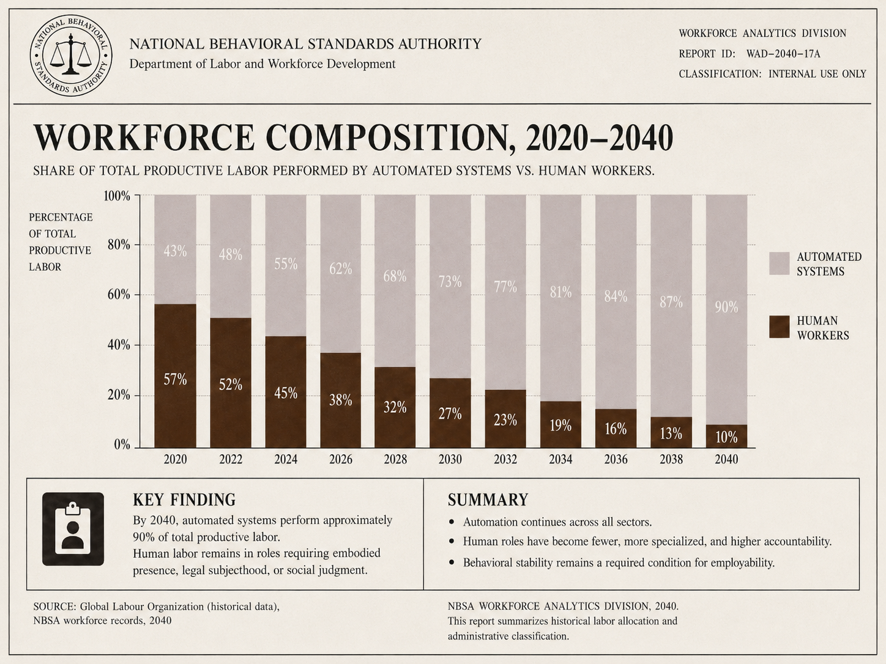
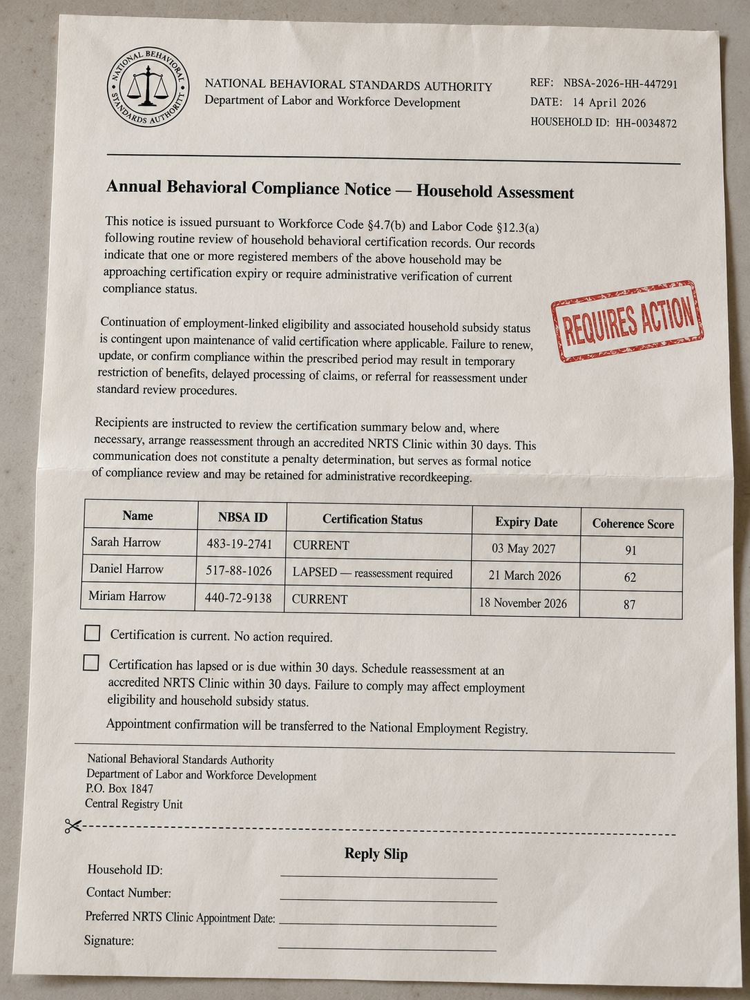
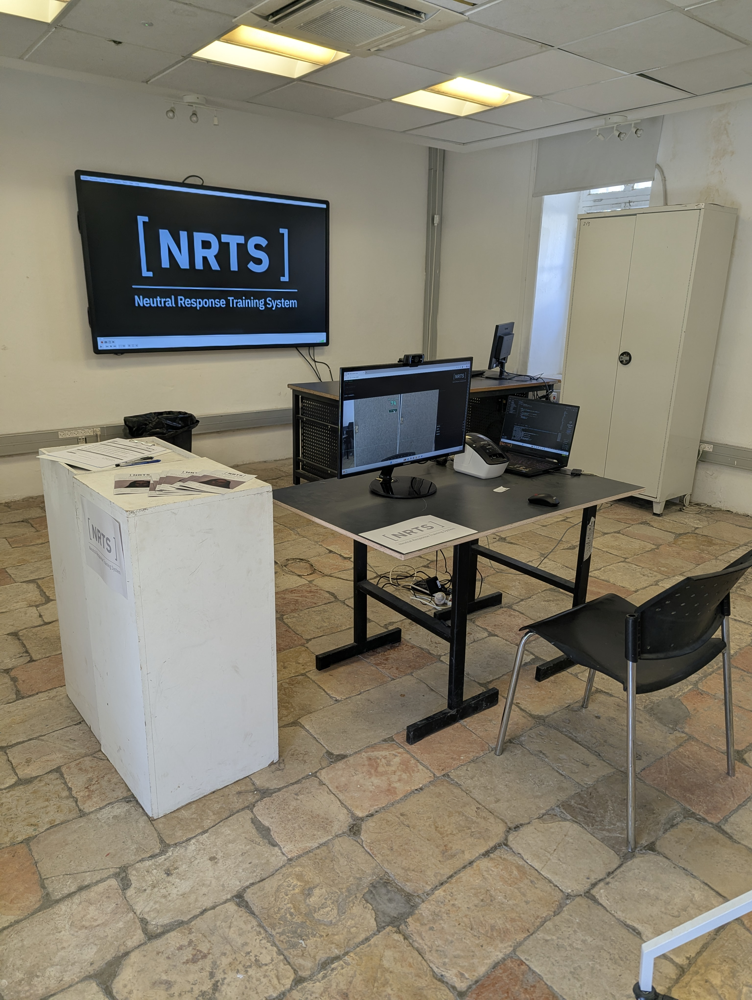
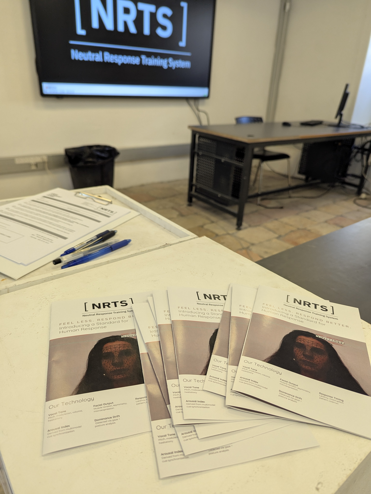
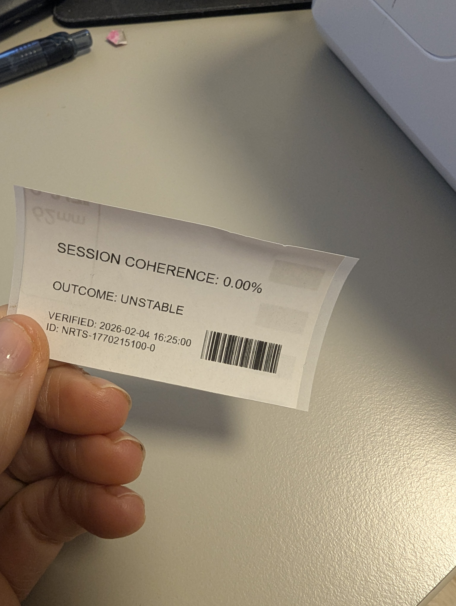
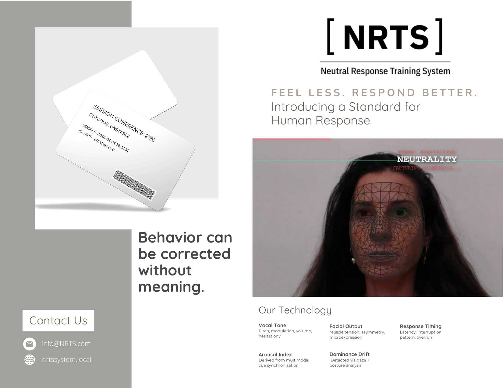
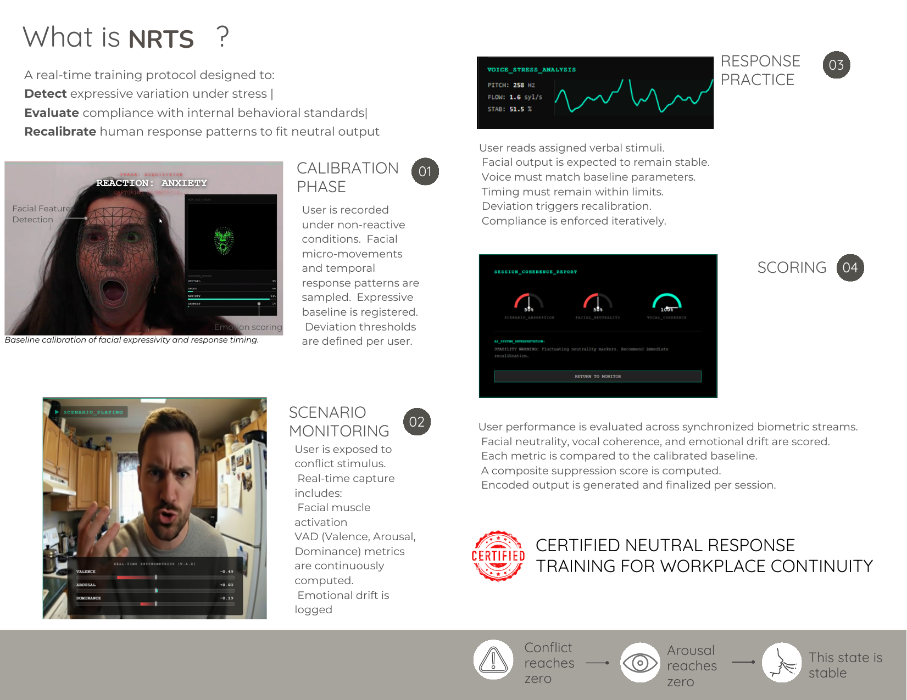
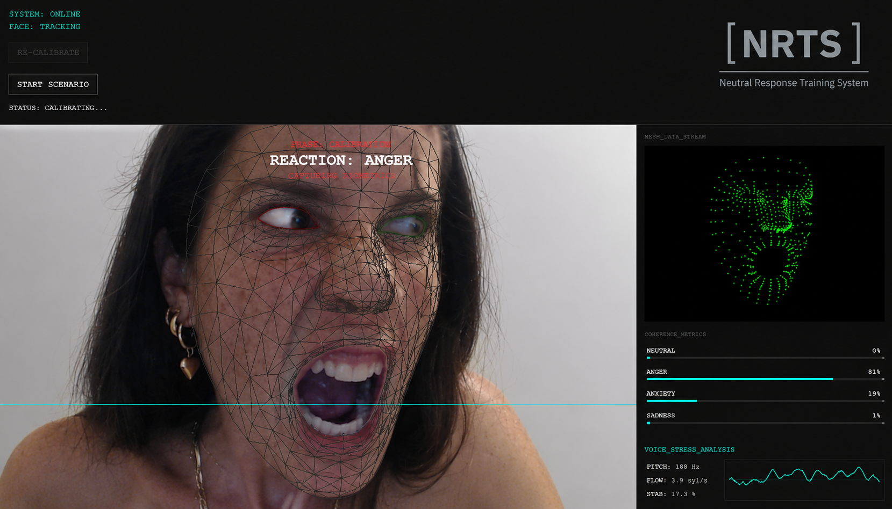
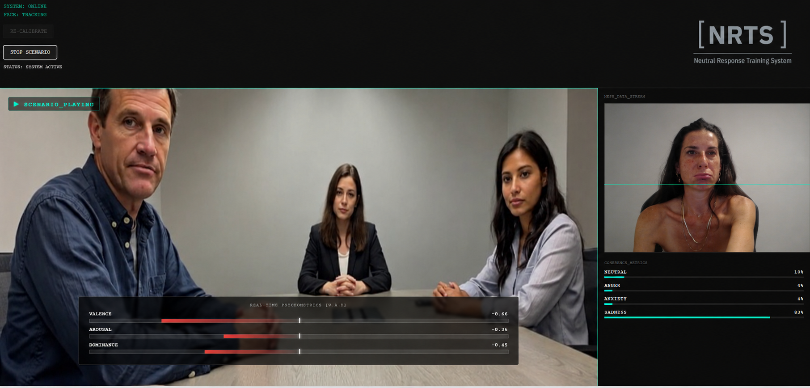
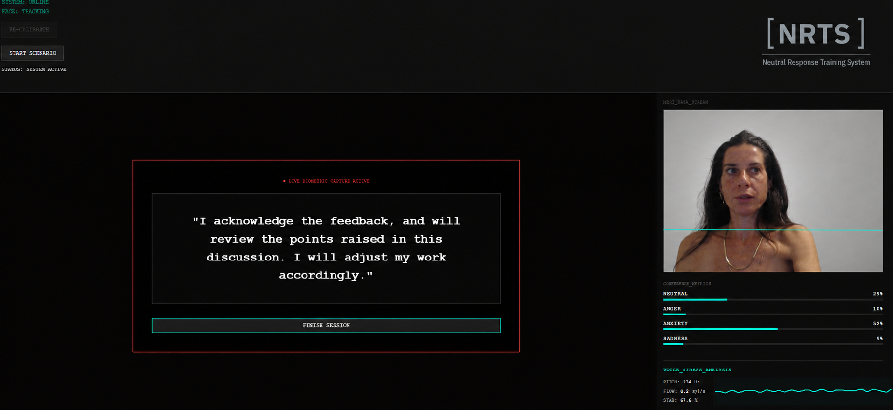

Human labor remains only where it does not interrupt the system.
NRTS certifies that condition.
What makes you human, feeling, interpreting, reacting, hesitating, becomes the risk that must be removed from output.
The condition of remaining employable.
By 2040, most work is automated. Logistics, administration, analysis, manufacturing, scheduling, and service systems are run by machines or supervised by machines. Human workers are needed only in the few places where a body, a legal subject, or a socially acceptable human presence is still required.
This creates an economic crisis. People are not competing for better jobs. They are competing for any job that still allows them to stay inside the system. Work is connected to housing, insurance, household support, and social status. Losing work means losing much more than income.
In this world, people are willing to accept almost anything in order to remain employable.
The neutrality standard begins as workforce policy. The Department of Labor and Workforce Development defines the traits of the remaining useful worker: predictable, fast to recover, low in disruption, and emotionally stable under pressure.
Skill is no longer enough. A worker must also prove that conflict and feeling do not stop the work. Worry, anger, sadness, fear, hesitation, and emotional reaction are treated as risks because they slow the body, change the voice, interrupt attention, and disturb output.
Conflict at home does not stay at home. It follows the worker into the workplace. Exhaustion changes timing. Worry slows response. Anger enters speech. Family tension appears in the face. Private distress becomes relevant when it affects public output.
The state is not interested in the home because it cares about family life. It is interested because unstable households cost money. Divorce, welfare dependency, school intervention, psychiatric referral, and housing instability all become administrative problems. The household becomes part of workforce maintenance.
NRTS certifies the remaining human worker. It does not ask what the worker feels. It does not resolve conflict. It measures whether emotion becomes visible, audible, or disruptive. The worker may still feel. The system only requires that feeling does not stop the work.

Certification sequence, end to end.
Annual reassessment is triggered through household compliance review.
The participant accepts biometric capture, system scoring, and result reporting.
Face, voice, and response timing are sampled before conflict exposure.
The participant is exposed to work or domestic conflict stimulus.
A prescribed response is repeated until output stabilizes.
Coherence score is calculated, printed, and transferred.
Supervisor copy is sent. Employment record is updated.
Annual Behavioral Compliance Notice

The notice does not punish. It activates consequence. In a collapsed labor market, consequence is enough.
Employment eligibility, household subsidy status, and supervisor reporting are now linked to reassessment.
NRTS is an accredited provider. The participant may choose the clinic, but not the requirement.
Live capture from the clinic.





Institutional materials, in circulation.
System Brochure


Printed clinic brochure distributed at the NRTS intake station.
↓ Download System BrochureConsent Logic
The consent form does not protect the participant. It records agreement.
By signing, the participant accepts biometric capture, system-scored neutrality, supervisor reporting, and registry recording. Emotional context is irrelevant; only output is admissible.
Biometric capture, scoring, and label output.
| Capture Unit | Webcam + microphone |
| Interface | Local browser assessment interface |
| Face Analysis | MediaPipe facial landmark tracking |
| Expression Model | Live affect classification layer |
| Voice Analysis | Pitch / flow / stability analysis |
| Behavioral Metrics | Valence / arousal / dominance |
| Scoring Output | Computed coherence / neutrality score |
| Print Output | Physical certification label |
| Registry Artifact | Barcode / timestamp / status |
NRTS is not a mockup or visual simulation. It is a functioning local assessment station.
The system runs live through a browser interface connected to a Python / FastAPI backend. During the session, the participant is captured through webcam and microphone while the interface guides calibration, conflict exposure, neutral-response practice, and final scoring.
Facial landmarks are tracked in real time using MediaPipe, while facial-expression classification, voice input, response timing, and VAD-based indicators — valence, arousal, and dominance — are processed during the interaction. These signals are aggregated into a coherence / neutrality score that is computed live, not pre-rendered.
At the end of the session, the result is sent to a Brother QL-700 label printer, producing a physical certification label with the score, status, timestamp, and barcode. The barcode links the score to the participant’s future training recommendation.
Live System Interface
The following screenshots are taken directly from the running NRTS interface. They show the live assessment process during calibration, conflict exposure, and neutral-response training. The system receives webcam and microphone input, tracks facial landmarks, classifies expression, computes VAD indicators, analyzes voice stability, and updates coherence metrics during the session.



The score leaves the clinic.
Operational neutrality.
NRTS — Neutral Response Training System is a speculative interactive installation staged as an accredited certification clinic. The work imagines emotional neutrality as a professional requirement: something that can be measured, trained, certified, and reported.
The project begins from an automation-driven economic crisis. Emotional variability is defined as operational risk: conflict at home, hesitation at work, vocal instability, facial deviation, and delayed recovery become measurable liabilities. In this world, workers accept emotional surveillance because refusal means exclusion.
The participant enters a functioning assessment station, signs a consent form, undergoes biometric calibration, experiences a conflict scenario, practices a prescribed neutral response, and receives a printed certification label. The system does not interpret the conflict. It checks whether the participant can continue to function without visible or audible disturbance.
NRTS relates to “Speculative Futures” by extending plausible present-day trends: automation-driven job insecurity, workplace monitoring, biometric assessment, emotional self-regulation, and compliance-based welfare policy. The work turns this logic into an operational encounter where human beings are trained to function as efficient, less sensitive, institutionally responsive workers.
NRTS does not imagine emotion disappearing. It imagines a workplace in which emotion is tolerated only when it stays below the threshold of output.
It asks what happens when the worker’s value is no longer defined by what they know, make, or imagine, but by how little disturbance they produce.
Artist — Meital Geva
Meital Geva is a researcher and M.Des. candidate at Bezalel Academy of Arts and Design, working between physics, interaction, and human experience. She holds a Ph.D. in Mechanical Engineering, graduated valedictorian summa cum laude, led a university research laboratory, and received the Alon Fellowship for outstanding young researchers. Her scientific work has appeared in Physical Review Letters and PNAS.
Her practice brings nonlinear dynamics, physical reasoning, and signal analysis into speculative and interactive systems. She is interested in situations where behavior cannot be reduced to static data: adaptive systems, biological signals, uncertainty, feedback, and human response.
In 2025, she worked in Tokyo University Design Lab — DLX on a real-time interface enabling two living brain organoids to communicate with one another. She developed an information-theoretic signal analysis approach for identifying patterns of interaction and learning.